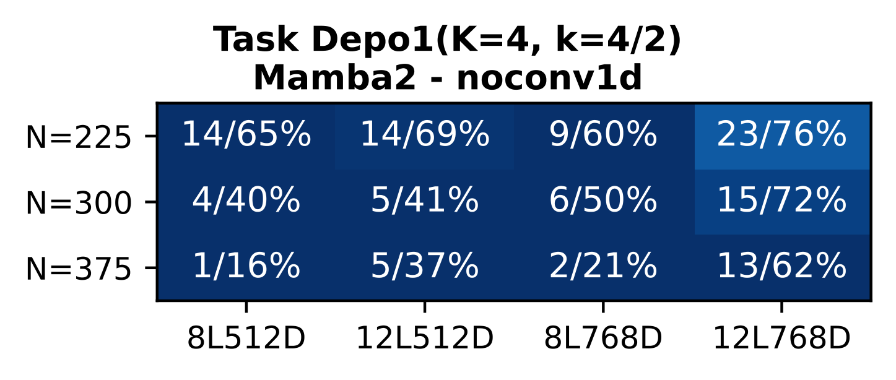
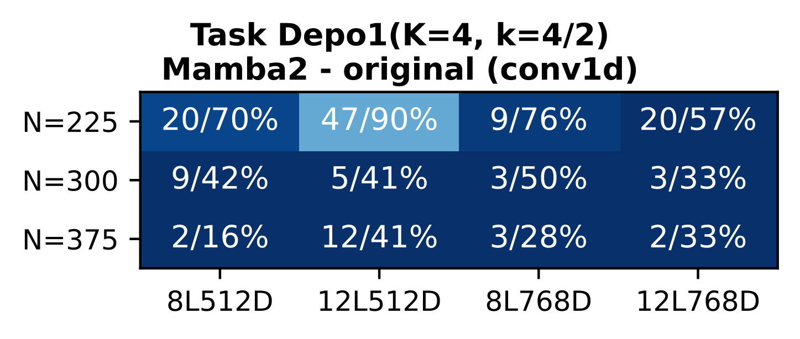

Result 6: GLA + Canon
Depth: 1→4 hop • Breadth: 2x • Surpasses Mamba2 on Brevo
Result 7: Mamba2 = conv1d + SSM
Remove conv1d → drops to GLA level. Canon-AbCD improves further.
Result 8: GDN ≈ already has Canon
Gating captures horizontal mixing. Canon-AbCD yields only marginal gains.

Mamba2 no conv1d

Mamba2 (original)